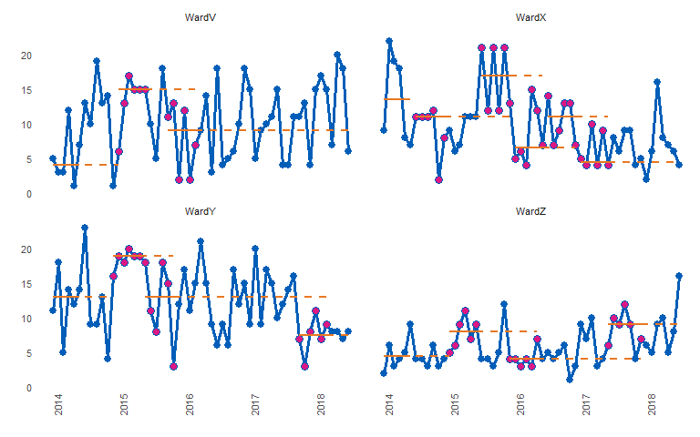

Automated analysis and re-basing of run charts at scale.
Online documentation and vignettes : runcharter


Rationale
Run charts are easy to create and analyse on an individual basis, hence they are widely used in healthcare quality improvement.
A run chart is a regular line chart, with a central reference line.
This central line, calculated using the median of a number of values over a baseline period, allows the QI team to assess if any statistically significant improvement is taking place, as a result of their improvement initiatives.
These improvements are denoted by certain patterns, or signals, within the plotted data points, in relation to the median line. The main signal is a run of 9 or more consecutive values on the desired side of the median line.
If this signal occurs as a result of improvement activities, but performance is not yet at the target level, a new median line can be plotted.
This is calculated using the median of the points that contributed to the signal. The aim is to then continue to work on improvement, measure and plot data, and look for the next sustained signal, until the improvement initiative is operating at its target level.
While this ‘rebasing’ (calculating new medians) is manageable for a few charts, it quickly becomes labour intensive as QI initiatives expand or further QI programmes are launched.
While enterprise level database software can be used to store the raw data, their associated reporting systems are usually ill suited to the task of analysing QI data using run chart rules.
This package automatically creates rebased run charts, based on the run chart rule for sustained improvement commonly used in healthcare ( 9 consecutive points on the desired side of the median).
All sustained runs of improvement, in the desired direction, will be highlighted and the median re-phased, using the points that contributed to the run.
Non useful observations (points on the median) are ignored and are not highlighted.
The main motivation is to analyse many charts at once, but you can also create and analyse a single run chart, or iterate, plot and save many individual charts.
The runcharter function - input
The function requires a simple three column dataframe, with the following column names
- datecol : a column of type ‘date’.
- grpvar : a character column indicating a grouping variable to identify each individual run chart and for faceted plots
- yval : the variable / value to plot.
runcharter function arguments
- df : a three column dataframe or data table with columns specifying a grouping variable -‘grpvar’, a date column -‘datecol’ and ‘yvar’ as the value to plot on the y axis. The grouping variable should be a character column, however if a factor column is passed to the function it will be converted to character. Data frames will be converted to data.table
- med_rows : How many rows / data points should the initial baseline median be calculated over?
- runlength : How long a run of consecutive points do you want to find, before you rebase the median? The median will be rebased using all useful observations (points on the median are not useful, and are ignored).
- direction : “above” or “below” the median, or “both”. Use “both” if you want to rebase the run chart any time a run of the desired length occurs, even if it is on the “wrong” side of the median line.
- datecol : the name of the date column
- grpvar : a character vector specifying the grouping variable used to facet the plots
- yval : a numeric column to be plotted on the y-axis. Integers will be converted to numeric
- facet_cols : the number of columns in the final faceted plot
- chart_title : The main title for the chart
- chart_subtitle : A subtitle for the chart
- chart_caption : A caption for the chart
- chart_breaks : character string defining desired x-axis date breaks e.g. “3 months”
- line_colr : Colour for run chart lines
- point_colr : Colour for run chart points
- median_colr : Colour for solid and extended median lines
- highlight_fill : Fill colour to highlight points in a sustained run
- … : further arguments passed on to function
The package exports the magrittr pipe, so you can chain commands using data.table syntax, or alternatively, use dplyr syntax and chain to the runcharter function
example plot
library(runcharter)
#> Loading required package: data.table
runcharter(signals ,med_rows = 13,
runlength = 9,
direction = "below",
datecol = "date",
grpvar = "grp",
yval = "y",
chart_title = "Analysis of runs below median",
chart_subtitle = "Example plot",
chart_caption = "analysed with runcharter",
chart_breaks = "6 months")
#> $runchart
#>
#> $sustained
#> grp median start_date end_date extend_to run_type
#> 1: WardV 7 2014-01-01 2015-01-01 2018-07-01 baseline
#> 2: WardX 11 2014-01-01 2015-01-01 2016-12-01 baseline
#> 3: WardY 13 2014-01-01 2015-01-01 2017-10-01 baseline
#> 4: WardZ 4 2014-01-01 2015-01-01 2018-07-01 baseline
#> 5: WardX 6 2016-12-01 2017-08-01 2018-07-01 sustained
#> 6: WardY 8 2017-10-01 2018-06-01 2018-07-01 sustained
Plot explanation
med_rowsdefines the initial baseline period. In the example below, the first 13 points are used to calculate the initial median. This is represented with a solid orange horizontal line. This median is then used as a reference for the remaining values, denoted by the extending orange dashed linerunlengthspecifies the length of run to be identified. Along withdirection, which specifies which side of median represents improvement, the runlength is your target number of successive points on the desired side of the median (points on the median are ignored as they do not make or break a run). You can set thedirectionas either “above” or “below” the line, to evidence improvement in a specific direction. Searching for runs in “both” directions is also possible. This might be more applicable for long term monitoring, rather than improvement purposes.
If a run is identified, the points are highlighted (the purple coloured points), and a new median is calculated using them. The median is also plotted and extended into the future for further run chart rules analysis, with a new set of solid and dashed horizontal lines.
The analysis continues, rebasing any further runs, until no more runs are found or there are not enough data points remaining.
Example
By default the function returns a faceted plot, highlighting successive runs below the median:
library(runcharter)
runcharter(signals,
direction = "above",
datecol = "date",
grpvar = "grp",
yval = "y",
facet_cols = 2)
#> $runchart
#>
#> $sustained
#> grp median start_date end_date extend_to run_type
#> 1: WardV 7 2014-01-01 2015-01-01 2018-07-01 baseline
#> 2: WardX 11 2014-01-01 2015-01-01 2018-07-01 baseline
#> 3: WardY 13 2014-01-01 2015-01-01 2018-07-01 baseline
#> 4: WardZ 4 2014-01-01 2015-01-01 2017-06-01 baseline
#> 5: WardZ 9 2017-06-01 2018-03-01 2018-07-01 sustainedYou can also look for any run, in any direction. Note we can pipe, even though dplyr is not used within the package
library(runcharter)
signals %>% runcharter(
direction = "both",
datecol = "date",
grpvar = "grp",
yval = "y",
facet_cols = 2)
#> $runchart
#>
#> $sustained
#> grp median start_date end_date extend_to run_type
#> 1: WardV 7 2014-01-01 2015-01-01 2018-07-01 baseline
#> 2: WardX 11 2014-01-01 2015-01-01 2016-12-01 baseline
#> 3: WardY 13 2014-01-01 2015-01-01 2017-10-01 baseline
#> 4: WardZ 4 2014-01-01 2015-01-01 2017-06-01 baseline
#> 5: WardX 6 2016-12-01 2017-08-01 2018-07-01 sustained
#> 6: WardY 8 2017-10-01 2018-06-01 2018-07-01 sustained
#> 7: WardZ 9 2017-06-01 2018-03-01 2018-07-01 sustainedNote that runs below the median are found for Wards X and Y, while a run above the median is highlighted for Ward Z.
The function will print the plot, and return a list, containing:
- the plot as a ggplot2 object,
- a datatable summarising the baseline median and each sustained period of improvement.
Don’t try this at home - setting runlength of 7 and searching in both directions to confirm that successive runs are identified:
signals %>%
runcharter(med_rows = 7,
runlength = 5,
datecol = "date",
grpvar = "grp",
yval = "y",
direction = "both")
#> $runchart
#>
#> $sustained
#> grp median start_date end_date extend_to run_type
#> 1: WardV 5 2014-01-01 2014-07-01 2015-01-01 baseline
#> 2: WardX 11 2014-01-01 2014-07-01 2014-11-01 baseline
#> 3: WardY 14 2014-01-01 2014-07-01 2014-12-01 baseline
#> 4: WardZ 4 2014-01-01 2014-07-01 2015-01-01 baseline
#> 5: WardV 15 2015-01-01 2015-05-01 2015-10-01 sustained
#> 6: WardX 7 2014-11-01 2015-03-01 2015-04-01 sustained
#> 7: WardY 19 2014-12-01 2015-04-01 2015-06-01 sustained
#> 8: WardZ 7 2015-01-01 2015-05-01 2015-12-01 sustained
#> 9: WardV 11 2015-10-01 2016-02-01 2018-07-01 sustained
#> 10: WardX 11 2015-04-01 2015-08-01 2016-12-01 sustained
#> 11: WardY 15 2015-06-01 2015-10-01 2017-10-01 sustained
#> 12: WardZ 4 2015-12-01 2016-04-01 2017-06-01 sustained
#> 13: WardX 5 2016-12-01 2017-04-01 2018-02-01 sustained
#> 14: WardY 7 2017-10-01 2018-02-01 2018-07-01 sustained
#> 15: WardZ 9 2017-06-01 2017-10-01 2018-07-01 sustained
#> 16: WardX 7 2018-02-01 2018-06-01 2018-07-01 sustained